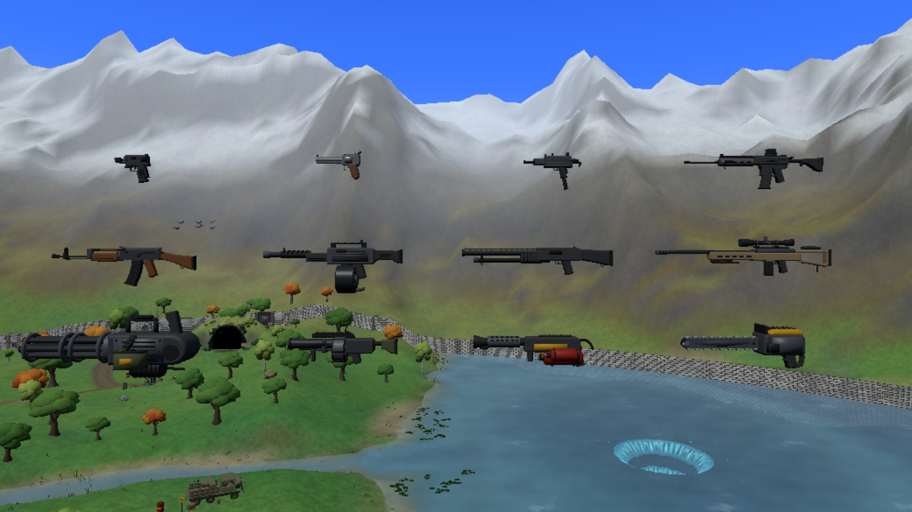

Weapon photos
Every weapon in the game as it is today (2026-10-09), straight out of the game's own renderer: each one alone, bare
(no suppressor, camo or muzzle flash), from its right side and from ahead and above. The Watchman MG and the mortar are
shown set up and as he carries them. Click a photo for the full size (1600 by 900).

Watchman MG, carried (legs folded)
Mortar, carried (broken down)